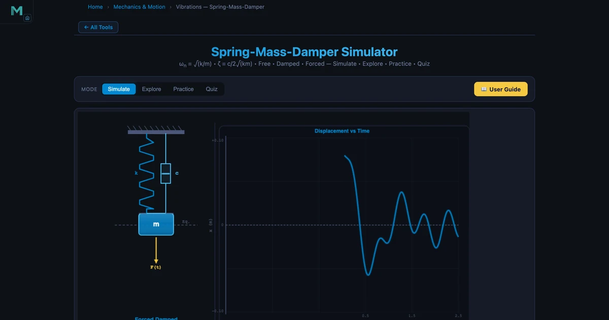
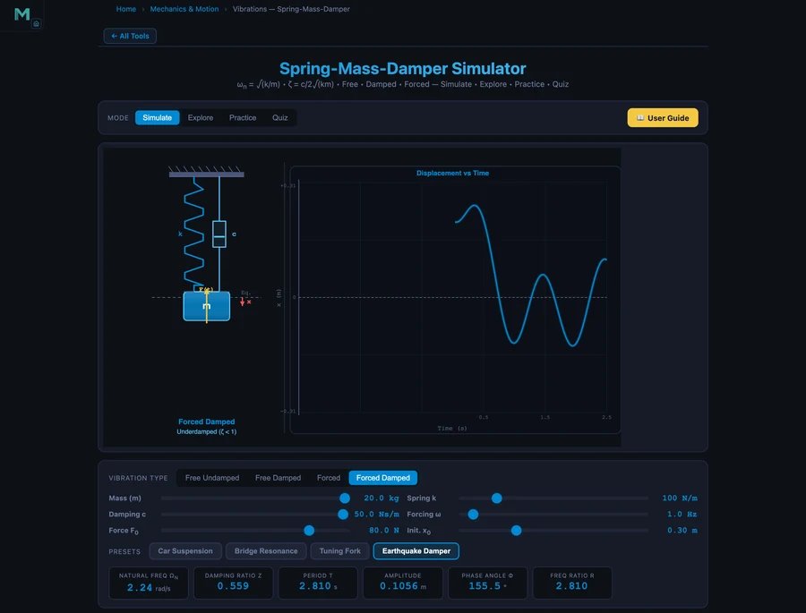

Spring-Mass-Damper Vibrations Simulator — Natural Frequency, Damping & Resonance

- A spring-mass-damper system is defined by its natural frequency ωn = √(k/m) (rad/s) and damping ratio ζ = c/(2√(km)), where m is mass (kg), k is stiffness (N/m), and c is the damping coefficient (Ns/m).
- The damping ratio sets the behaviour: ζ < 1 is underdamped (oscillates and decays), ζ = 1 is critically damped (fastest return without oscillation), and ζ > 1 is overdamped; most real systems sit at ζ ≈ 0.1–0.4.
- Under forcing, resonance occurs at frequency ratio r = ω/ωn = 1 with magnification M = 1/(2ζ), while effective vibration isolation needs r > √2 ≈ 1.414.
Every car ride you've ever taken was shaped by a spring-mass-damper system. The spring-mass-damper vibration simulator lets you change mass, stiffness, and damping in real time, watch the oscillation on a live waveform, and immediately see how natural frequency and damping ratio respond. It's one of those rare tools where the theory and the behaviour snap into alignment the moment you move a slider.
Why students get confused about vibrations
Here's a pattern I see every semester. The student can write down ωn = √(k/m) without a second thought. Ask them what happens when you double the mass — they'll tell you the frequency drops. Fine. Then ask what happens to the damped frequency when you increase damping near the critical value, and the room goes quiet.
The trouble isn't the formula. It's that vibration concepts — natural frequency, damping ratio, resonance, transmissibility — all interact in ways that are hard to track on paper. The system is underdamped, so it oscillates. But how fast does the oscillation die? And what happens if you add a forcing frequency that matches ωn? Those aren't questions a static diagram answers well.
The simulator shows all four vibration types — free undamped, free damped, forced undamped, and forced damped — with a live animated spring-mass-damper on the canvas and a scrolling waveform chart. The readout cards update instantly as you move the sliders. That feedback loop is what the textbook can't give you.
The core formulas — what each number actually means
The equation of motion for a forced damped system is:
\[m\ddot{x} + c\dot{x} + kx = F_0 \sin(\omega t)\]
Three parameters define the system entirely: mass \(m\) (kg), spring stiffness \(k\) (N/m), and damping coefficient \(c\) (Ns/m). From these, two non-dimensional quantities govern the response:
\[\omega_n = \sqrt{\dfrac{k}{m}} \quad \text{(natural frequency, rad/s)}\]
\[\zeta = \dfrac{c}{2\sqrt{km}} = \dfrac{c}{2m\omega_n} \quad \text{(damping ratio)}\]
In the Car Suspension preset, k = 500 N/m and m = 20 kg, so ωn = √(500/20) = 5.00 rad/s. With c = 50 Ns/m, the critical damping is cc = 2√(km) = 2√(10000) = 200 Ns/m, giving ζ = 50/200 = 0.250. That's a lightly underdamped system — realistic for a passenger vehicle suspension.
For forced vibration, the steady-state amplitude depends on the frequency ratio \(r = \omega / \omega_n\) and the magnification factor:
\[M = \dfrac{1}{\sqrt{(1 - r^2)^2 + (2\zeta r)^2}}\]
The Car Suspension is forced at 2 Hz, giving ω = 2 × 2π = 4π rad/s. The frequency ratio r = 4π/5 = 2.513. Plugging into M: with r = 2.513 and ζ = 0.250, M ≈ 0.183 — the suspension actually reduces the forcing amplitude, because the system operates well above resonance (r > √2 ≈ 1.414). The simulator confirms: amplitude = 0.0183 m = M × (F0/k) = 0.183 × (50/500).
The four simulation presets and what they teach
Car Suspension — damped forced vibration
This is the most practically grounded preset. A 20 kg quarter-car mass on a 500 N/m spring with 50 Ns/m damping, forced at 2 Hz (road undulations). The key lesson: with r = 2.513 and ζ = 0.25, the system is deep in the isolation zone. The amplitude is only 18.3 mm. Students are surprised — softer springs actually absorb road vibrations better because they push the natural frequency below the excitation. The real challenge in suspension design is keeping ζ high enough (ride comfort) without reducing the isolation too much.
Tuning Fork — free damped vibration
Mass 0.5 kg, k = 500 N/m, c = 0.1 Ns/m. Natural frequency ωn = √(500/0.5) = 31.62 rad/s ≈ 5.03 Hz. Damping ratio ζ = 0.1/(2√(500×0.5)) = 0.1/20 = 0.005 — essentially undamped. The waveform shows hundreds of oscillations before amplitude visibly decays. This illustrates logarithmic decrement: δ = 2πζ/√(1−ζ²) ≈ 0.031, meaning each successive peak is only 3.1% smaller than the previous one.
Bridge Resonance — undamped forced near resonance
m = 20 kg, k = 200 N/m, c = 1 Ns/m. The forcing frequency is set equal to the natural frequency — r = 1. With such low damping (ζ = 0.009), the amplitude magnification factor M = 1/(2ζ) = 56. The waveform grows wildly. This is the Tacoma Narrows Bridge scenario from 1940, where wind-induced oscillations near the bridge's natural frequency drove the amplitude to failure. Engineers use this preset to make the point visceral: resonance isn't just a theoretical edge case. It kills structures.
Earthquake Damper — heavily damped forced vibration
m = 20 kg, k = 100 N/m, c = 50 Ns/m, forcing at 1 Hz. Natural frequency ωn = √(100/20) = 2.24 rad/s, ζ = 50/(2√2000) = 50/89.4 = 0.559. The frequency ratio r = (1 × 2π)/2.24 = 2.810. Amplitude = 0.1056 m. Despite operating above resonance with significant forcing, the heavy damping keeps the amplitude controlled. This is the operating principle of tuned mass dampers in tall buildings — Taipei 101's 730-tonne pendulum uses exactly this approach.

Worked example — verifying the damped natural frequency
For the Earthquake Damper preset, the damped natural frequency is:
\[\omega_d = \omega_n \sqrt{1 - \zeta^2} = 2.24\sqrt{1 - 0.559^2} = 2.24\sqrt{0.687} = 2.24 \times 0.829 = 1.857 \text{ rad/s}\]
The free-damped oscillation follows:
\[x(t) = A_0 e^{-\zeta \omega_n t} \cos(\omega_d t + \phi)\]
The exponential envelope decays with time constant τ = 1/(ζωn) = 1/(0.559 × 2.24) = 0.797 s. After one second, the amplitude has dropped to e−1.254 ≈ 28.5% of its initial value. That's fast — within 3–4 seconds, the free oscillation is essentially gone. The phase angle for forced vibration is φ = arctan(2ζr/(1−r²)). With r = 2.810 and ζ = 0.559: numerator = 2 × 0.559 × 2.810 = 3.143, denominator = 1 − 7.896 = −6.896. Since the denominator is negative, φ is in the second quadrant: φ ≈ 155.5°. The simulator readout confirms this exactly.
How to use this in a lesson
Opening hook (5 min). Show the Bridge Resonance preset with no explanation. Let the waveform fill the screen and watch the amplitude grow. Ask: "What's causing this?" Students will offer guesses. Let them debate briefly before revealing the concept of resonance. It lands differently when they've seen the number explode in front of them.
Core concept pass (15 min). Walk through the four presets in order: Free Undamped → Free Damped → Forced → Forced Damped. At each step, ask students to predict what changes before you apply the preset. The forced damped session benefits from comparing r < 1, r = 1, and r > 1 by manually dragging the forcing frequency slider.
Design challenge (10 min). Give students a target: design a mount (choose k and c) for a machine running at 3000 RPM (ω = 314 rad/s) that gives transmissibility TR < 0.1. They need to pick ωn < ω/√2 and check TR = √((1+(2ζr)²)/((1−r²)²+(2ζr)²)). The simulator lets them verify their design instantly — no derivation required to check the result. This connects to the SHM simulator guide where similar mass-spring concepts are explored.
Explore mode wrap-up (5 min). Switch to Explore mode and walk through the transmissibility concept card. The graph showing TR vs r for different ζ values crystallises why low-damping mounts are preferred above r = √2 — something that surprises most students the first time they see it.
Try It Yourself
All tools below are free — no account, no download.
Key Takeaways
- The natural frequency ωn = √(k/m) depends only on stiffness and mass — increasing stiffness raises ωn, increasing mass lowers it.
- The damping ratio ζ = c/(2√(km)) classifies behaviour: underdamped (<1), critically damped (=1), overdamped (>1). Most engineering systems aim for ζ ≈ 0.1–0.4.
- Resonance (r = 1) produces maximum amplitude M = 1/(2ζ) — potentially catastrophic at low damping. The Tacoma Narrows Bridge collapsed because wind excitation approached its natural frequency.
- Effective vibration isolation requires r > √2 ≈ 1.414. At this condition transmissibility drops below 1, meaning less force is transmitted to the foundation than is applied.
- The Earthquake Damper preset (ζ = 0.559, r = 2.810) demonstrates how heavy damping limits amplitude even under significant forcing — the basis for seismic isolation systems.
- The damped natural frequency ωd = ωn√(1−ζ²) is always lower than ωn; the difference is negligible for lightly damped systems but significant as ζ approaches 1.
Frequently Asked Questions
What is the natural frequency of a spring-mass system?
The natural frequency ωn = √(k/m) in rad/s, where k is the spring stiffness in N/m and m is the mass in kg. For the Car Suspension preset (k=500 N/m, m=20 kg), ωn = √(500/20) = 5.00 rad/s. Convert to Hz with fn = ωn/(2π) ≈ 0.796 Hz.
What does the damping ratio tell you about a vibrating system?
The damping ratio ζ = c/(2√(km)) classifies system behaviour. ζ < 1 means underdamped — oscillations decay gradually. ζ = 1 is critically damped — fastest return to rest without oscillation. ζ > 1 is overdamped — slow non-oscillatory return. Most real systems (car suspensions, building shock absorbers) are lightly underdamped with ζ between 0.1 and 0.4.
Why is resonance dangerous in mechanical systems?
At resonance the frequency ratio r = ω/ωn ≈ 1, and the amplitude magnification factor M = 1/(2ζ). With low damping (ζ = 0.01), M can reach 50 — meaning the response amplitude is 50 times the static deflection. This explains the Tacoma Narrows Bridge collapse in 1940 and why engineers carefully avoid operating speeds near a system's natural frequency.
How does the Earthquake Damper preset demonstrate vibration isolation?
The Earthquake Damper preset sets m=20 kg, k=100 N/m, c=50 Ns/m, and forcing frequency 1 Hz. This gives ωn = 2.24 rad/s and frequency ratio r = 2.810 — well above √2 ≈ 1.414 where isolation begins. The high damping ratio ζ = 0.559 limits the amplitude to 0.1056 m even though the system is forced. Above r = √2, transmissibility drops below 1 and less force reaches the ground.
What is the difference between free vibration and forced vibration?
Free vibration occurs when a system is disturbed from equilibrium and released — it oscillates at its natural frequency ωn with no external input. Forced vibration occurs when a continuous external force F(t) = F₀sin(ωt) drives the system. The steady-state amplitude depends on the frequency ratio r = ω/ωn and damping ratio ζ. The magnification factor M = 1/√((1−r²)²+(2ζr)²) describes how much the force amplifies or attenuates the response.
Vibration analysis sits at the intersection of almost every mechanical engineering discipline — structures, machines, vehicles, buildings. Getting the concept of natural frequency and damping ratio right early makes the rest of the subject click into place.
Load the Spring-Mass-Damper Simulator and drag the forcing frequency through resonance. Watch what happens on both sides of r = 1. That five-second experiment teaches more than a full lecture on magnification factor.